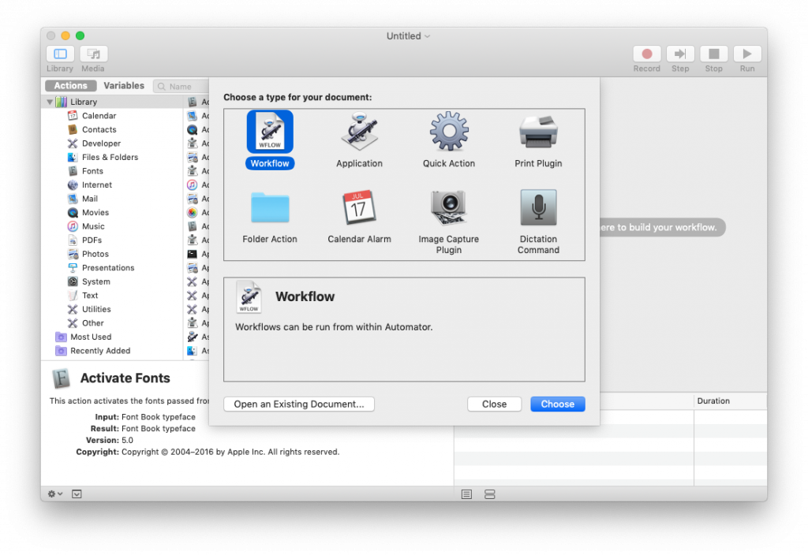
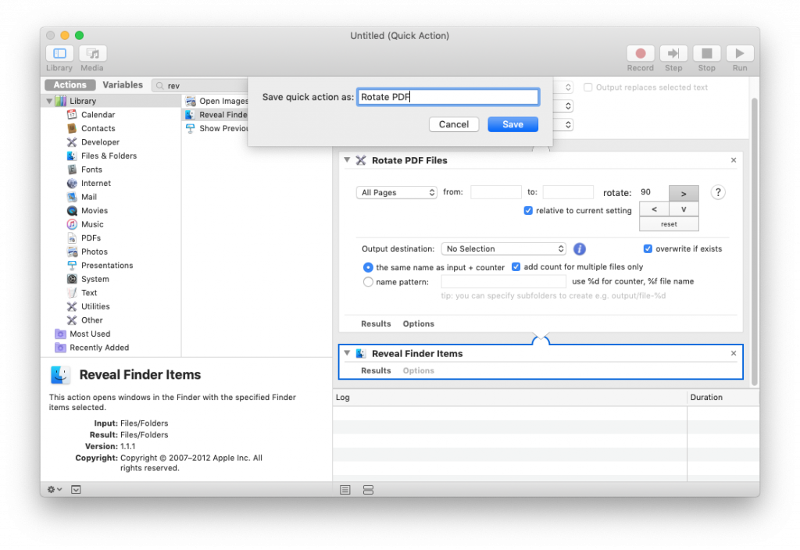

Automator allows you to automate tasks using a drag and drop interface that makes programming these tasks easier for beginners. Itallows anyone to easily create workflows that automate a repetitive task. Macosxautomation.com has some great examples, if you want to learn more. Open Automator, it should be in your Application Folder. Choose type of workflow you want to create.

This could be: Workflow which can be used within Automator or used as action for VipRiser virtual PDF printer. Application you can drag PDF files into, Quick Action which appears when you right-click PDF file or Printer Plugin accessible from standard print dialog. After you select a type, you can drag in actions you want to execute. This could be a VipRiser’s action but also any other action available to Automator.

Each step can be configured by interactively changing parameters. The configuration will be saved as part of the workflow. You can chaing steps together. In this example, PDF file will be rotated and then revealed in the Finder. NOTE: VipRiser PDF Ops will work with temporary files rather then the original one. If you want to overwrite the original, you have to add additional steps.

After you configure your workflow, you can save it as an action, in this case it is going to be the Quick Action.

The Quick Action will show up in Finder’s context menu, after you right-click on a PDF file or in the Services menu (if app supports it).

Rotate PDF Example as Quick Action